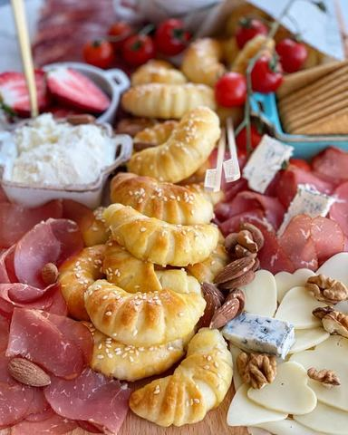

Nedelja

Moja beleška
SačuvanoOvakve najviše volim, kada okupim najdraže, kada se potrudim da serviram onako da i meni srce zaigra. Kada je svaki zalogaj ljubav i kada sa osmehom idemo kroz dan. A trik za to da ne morate i da mesite kiflice nedeljom - a da su jednakog ukusa kao da ste ih upravo ispekli je u ovom receptu. Onda kada imam više vremena, zamesim i ispečem duplu meru. Rasporedim u kesice i ostavim u zamrzivaču. Po potrebi ubacim u rernu i za 10ak minuta dobijem jednako savršene kao da su tek ispečene 😍😍😍 Puter kiflice 🥐 U moru recepata za kiflice ovaj se izdvojio kao omiljeni u našoj kući, a obožavaju ga i svi naši prijatelji 🤗 Napravljene su toliko puta, toliko puta je recept podeljen da se neću smiriti dok ga svi ne isprobate 😍 Kiflice su mekane, puteraste, divne i ja ih najčešće pravim bas ovako, prazne, jer ih dečica tako najsladje jedu 😍
Sastojci
- Sastojci
Priprema
U jednoj ciniji sjediniti mlaku vodu i jogurt u drugoj mleko i ulje. Kvasac podelite na dva dela i dodate u obe činije, ostavite tako 10ak minuta pa sjediniti, a u to dodate brašno sa soli i zamesite testo. Ostavite ga da narasta nekih pola sata do 45 minuta, pa nadoslo testo razvučete na pobrašnjenoj podlozi, časom vadite krugove, svaki krug razvučete, a na jednom kraju ga zasecete nožem na nekoliko mesta. Ukoliko pravite prazne, zarolajte i ja volim kad ih malo savijem ka unutra, da dobiju neki oblik potkovice. Ako ih punite, pustite masti na volju, feta sir i jaje, pa recimo sunka, kecap, kackavalj.. piletina i sir.. Šta god volite. Na pleh izrendane pola zaleđenog putera, poređate kiflice, premažite jajetom, pospite susamom pa izrendajte ostatak putera. Ostavite ih u plehu 15ak minuta, pa u zagrejanoj rerni na 180C pecite 15ak minuta ili dok lepo ne porumene. Mislim da ćete ih obozavati pa će se i kod vas naći za doručak vikendom, na dasci uz meze, pa i na svakoj proslavi, Uzivajte, Prijatno 🌸🌸🌸
Originalni opis sa Instagrama
Nedelja 🙏🏼🤍 Ovakve najviše volim, kada okupim najdraže, kada se potrudim da serviram onako da i meni srce zaigra. Kada je svaki zalogaj ljubav i kada sa osmehom idemo kroz dan. A trik za to da ne morate i da mesite kiflice nedeljom - a da su jednakog ukusa kao da ste ih upravo ispekli je u ovom receptu. Onda kada imam više vremena, zamesim i ispečem duplu meru. Rasporedim u kesice i ostavim u zamrzivaču. Po potrebi ubacim u rernu i za 10ak minuta dobijem jednako savršene kao da su tek ispečene 😍😍😍 Puter kiflice 🥐 U moru recepata za kiflice ovaj se izdvojio kao omiljeni u našoj kući, a obožavaju ga i svi naši prijatelji 🤗 Napravljene su toliko puta, toliko puta je recept podeljen da se neću smiriti dok ga svi ne isprobate 😍 Kiflice su mekane, puteraste, divne i ja ih najčešće pravim bas ovako, prazne, jer ih dečica tako najsladje jedu 😍 Sastojci: •100 ml mlakog mleka •150 ml ulja •100 ml mlake vode •100 ml jogurta •25 gr svezeg ili jedna kesica suvog kvasca •3, 4 kašičice soli •600 gr brašna •250 gr putera •1 jaje •susam U jednoj ciniji sjediniti mlaku vodu i jogurt u drugoj mleko i ulje. Kvasac podelite na dva dela i dodate u obe činije, ostavite tako 10ak minuta pa sjediniti, a u to dodate brašno sa soli i zamesite testo. Ostavite ga da narasta nekih pola sata do 45 minuta, pa nadoslo testo razvučete na pobrašnjenoj podlozi, časom vadite krugove, svaki krug razvučete, a na jednom kraju ga zasecete nožem na nekoliko mesta. Ukoliko pravite prazne, zarolajte i ja volim kad ih malo savijem ka unutra, da dobiju neki oblik potkovice. Ako ih punite, pustite masti na volju, feta sir i jaje, pa recimo sunka, kecap, kackavalj.. piletina i sir.. Šta god volite. Na pleh izrendane pola zaleđenog putera, poređate kiflice, premažite jajetom, pospite susamom pa izrendajte ostatak putera. Ostavite ih u plehu 15ak minuta, pa u zagrejanoj rerni na 180C pecite 15ak minuta ili dok lepo ne porumene. Mislim da ćete ih obozavati pa će se i kod vas naći za doručak vikendom, na dasci uz meze, pa i na svakoj proslavi, Uzivajte, Prijatno 🌸🌸🌸 • • • #kiflice #domacekiflice #dorucak #idejezadoručak #vremejezadorucak #slanirecepti #slanisi #daska #slanadaska #meze